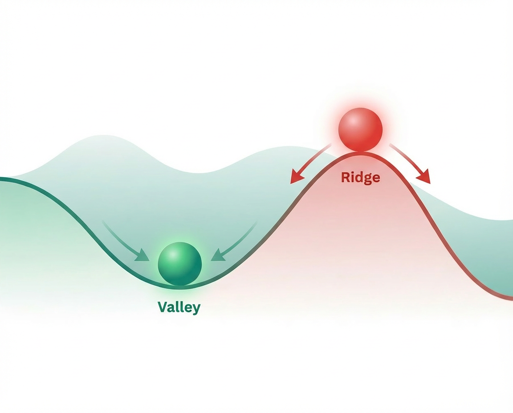
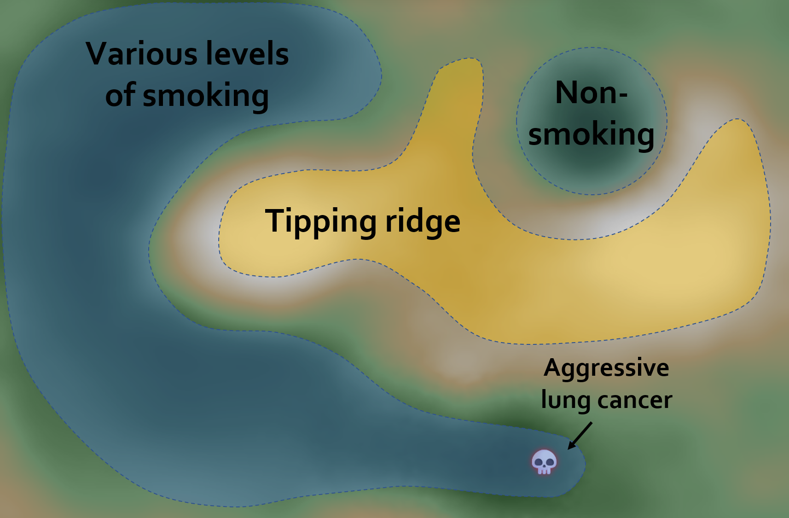
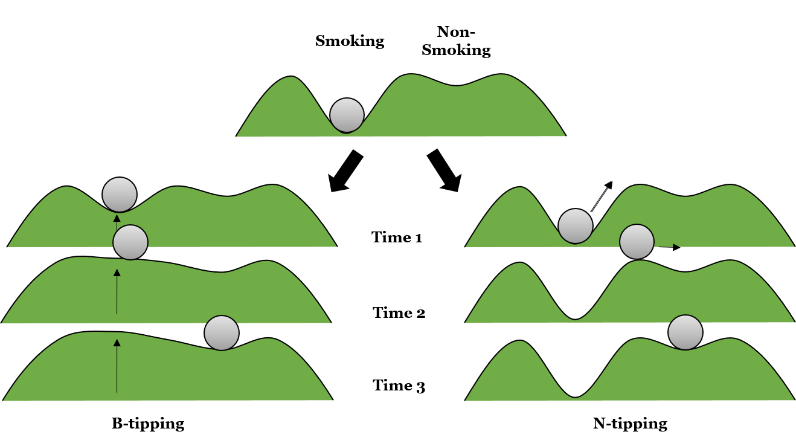

Resilience Landscapes
An interactive explorable explanation of how complex systems fail and how they're navigated
A warm welcome to the world of attractor landscapes!
Complex systems science offers a powerful conceptual tool to map transition dynamics: the attractor landscape. Imagine a pool table with a single billiard ball. Each position (i.e. coordinate) on the table represents a possible state for the system, and the current status is represented by the location of the billiard ball.
Now imagine the surface isn’t flat, but contains hills and valleys. The valleys represent stable patterns – the "attractors", collections of similar states that trap the ball. It’s easy for the ball to settle into a valley; it requires more effort or perturbation to push it out. The ridges between valleys are called tipping points. And somewhere, there is danger that leads to state of permanent destruction; ruin.
Perhaps your couch is an attractor for you. Maybe a new exercise regime is the opposite; an unsteady state, repellor, that's hard to maintain. Curing munchies with rat poison would be ruin.
Thinking in terms of attractor landscapes can take your thinking past flowcharts suggesting neat, linear causes and effects. It shifts focus towards understanding the system’s dispositions, its underlying tendencies and stabilities. It encourages a focus on nurturing the conditions, tending the substrate, working the soil, from which desired behaviours – in deeper, more stable valleys – can emerge, and sustain themselves more naturally.
We should explore this.
Play time for each section is between 1-5 minutes, and you'll likely finish the whole thing in less than 7-15min. If you need to quit in the interim, you can come back to this page and jump to new sections with the menu in the bottom. Here's what you'll learn:
- Hysteresis: Why it's easier to fall into bad states than to climb out
- Nudge-induced Tipping: Changing a system by kicking it around
- Substrate-induced Tipping: Changing a system by changing the landscape it operates in
- Ruin risks: The points of no return
- Domain dependence: The usefulness of linear thinking depends on context
(To learn more, see this explorable, this blog post, this study on strategy and communications, or this study on behaviour change)
Ready? Let's begin.
Jump to Stage:
Act 1: The Trap
What just happened?
You probably noticed: it took 1 click to fall in, but it required ~8 clicks of persistent effort to escape.
This asymmetry is called hysteresis.
For example: Communities lose trust quickly but rebuild it slowly. It's easy to fall into bad states, expensive to escape.
Or think of a neighborhood that loses its last grocery store. Residents leave. Property values drop. Getting a new store? That requires reversing a downward spiral – far harder than the initial decline.
It is rarely a single thing that causes anything in human systems, but rather often a combination of factors that only become known after the fact. This is captured in the sayings "Everything is obvious, once you know the answer", as well as "It's tough to make predictions, especially about the future."
Notice that by moving the ball to the adjacent tiles, you did something very important. You took steps to the "adjacent possible" state; a place you could get from where you currently were. This will be explored as we move further.
The ball sits on a plateau. Click an adjacent tile to move the ball.
Try to get it into the valley (the dark green area).
Now move the ball OUT of the valley. Slopes are slippery – if you stop for too long, the ball will slide back down!
Intermission
What did you think about this first interaction?
Act 2: Changing the Landscape
Define your System
Before we begin, think of a system you care about, and which is trying to reach some goal – this could be e.g. yourself, or your community, city, or organisation. Let's imagine the ball is that system.
Now, what is a desirable state – a goal – this system is striving for? This will be represented by the star (⭐) on your landscape.
A New Perspective
In Act 1, you saw how a system falls into an attractor – and you had to exert persistent effort to push it back out.
Now we switch to a more elaborate view of the terrain – one where you have much less direct control.
In this view, each coordinate on the landscape represents a possible "state" of your system.

Valleys are collections of coordinates that naturally pull the system toward them. If your goal is a set of states in a valley, it's easy to maintain it.
Ridges are unstable or difficult states that push the system away. If your goal is a set of states on a ridge, it's difficult to maintain it.
But navigation is not necessarily about moving the ball directly – it could be about shaping the landscape of possibilities, as we'll see next.
Stability goes bye-bye in the wild!
In act 1 you had perfect control of the ball, and the environment was static.
But living systems don't exist in a vacuum. They are constantly influenced by external and internal events, including shocks and interactions with their environment.
Watch how the smaller events – vibrations – and larger shocks, depicted by red arrows, nudge your system in its space of possibilities. Just observe how it drifts through its current environment.
Reshaping the Path
Now it's your turn. To help the system reach the goal, you must reshape the terrain itself. But first, a few concepts.
When real systems abruptly change their state ("tip"), you can think of it happening in different ways:
Control-driven Tipping: In Act 1, you deliberately pushed the system over a ridge step by step. This is intentional effort – like choosing to scale a mountain to reach a new destination.
N-Tipping ("noise-induced"): This is what you just observed with the red arrows. The system wanders randomly due to unexpected shocks or environmental noise, eventually being knocked over a tipping point by chance.
B-Tipping ("bifurcation-induced"): Here, the tipping happens because the landscape itself changes. What used to be a stability-inducing valley slowly flattens out until it offers no protection at all. Once that stability is gone, even the smallest amount of everyday noise will push the system into a new state.
In what follows, you're acting more as a steward than a driver of the system. Stamp the terrain (click to lift/lower) to create a path of valleys – and remove the ridges standing in the way.
💡 Tip: On a computer, you can right-click to quickly toggle between lift and lower.
Success!
You reached the goal in X stamps.
By the way, in complex systems science, these Valleys are formally called Attractors, and the Ridges are called Repellors. You just practically applied attractor dynamics!
But can we be more strategic? Often, it's more effective to first lower terrain below the goal deeply, then craft a valley backwards from the goal to wherever the ball now is.
You can also raise the areas where you don't want the system to go, to make negative movement harder.
Warning: Notice that a skull has emerged in the landscape. This is a state of destruction called ruin. Hitting ruin means game over!
Working backwards from a goal is what people mean when they say "begin with the end in mind".
There was uncertainty about where the ball would be by the time your "canal" was finished, but you were able to hold off the final part of the construction to the last minute.
But there's a catch: This strategy works because the landscape and the goal are stable, and you can invest your resources ("stamps") up front, knowing they will pay dividents later.
Try using the same "working backwards" strategy again, but beware: There are now many more coordinates that instill ruin.
In complex systems, preventing ruin is imperative:
"The first rule of life is not to die."This is because destruction nullifies all your potential future wins. Hence, take risks but cut your downside.
You can do this by immediately raising the terrain below ruin states.
Do this first, then carry on with the "working backwards from the goal" strategy.
Uh-oh!
Something has profoundly shifted!
What was once your Goal (⭐) has collapsed into a Ruin (💀). Reaching it now means failure for the system.
This is what often happens in the real world; today's goals can be tomorrow's stray paths.
Your new Goal has moved to the North-West. You must pivot your landscaping strategy immediately to avoid disaster!
Master of Landscapes
You've demonstrated that systemic change isn't just about pushing harder, but changing shape of the possibilities – which states (i.e. coordinates) are easy to arrive at, and which are more difficult.
"Changing the landscape changes the future."
You've seen that strategies such as "beginning with the end in mind" and working backwards can be effective, but only in the appropriate context; in this case, stability. Conversely, in stable terrains, moving the ball by constantly shifting the directly adjacent area can be very wasteful: You could even just use a few stamps to make a path to your goal, sit back, and wait for randomness to push you there eventually.
By moulding what's possible, you enabled positive B-tipping and mastered the first stage of managing resilience landscapes.
There's one more thing to see here. Observe how the ball doesn't always drop to the same direction.
Stage 2: The Evolving Landscape
Now that you've mastered the basics of B-tipping, let's refine your approach.
Remember the strategy: First lower terrain below the goal, then craft a valley backwards to the system's current state. Finally, raise the areas you want to avoid.
Ready to steward the system through this next challenge?
System Collapse
The system reached the Ruin state. This is a point of no return from which the system cannot recover.
In complex systems, preventing ruin is imperative: "The first rule of life is not to die."
This is because destruction nullifies all your potential future wins. Hence, take risks but cut your downside.
Sensitivity Check
Watch the ball roll again from the exact same starting position.
If the system isn't sensitive to initial conditions, it should follow the exact same path. Sometimes it acts similarly, other times it diverges wildly.
Sensitivity to Initial Conditions
Even though the ball started at the exact same spot, tiny microscopic differences (and randomness) caused it to take quite a different path.
This is the hallmark of chaos: Sensitivity to Initial Conditions (AKA "the butterfly effect").
When you deal with the nuances of complex systems, you cannot predict their future path, because you can never measure the current state precisely enough to account for all minute eventualities.
To learn more, see Table 1 here.
Quick Check
For each scenario, decide: was it N-tipping or B-tipping?
A well-funded hospital is overwhelmed by an unexpected pandemic surge.
A bridge that passed inspections for years suddenly collapses after decades of deferred maintenance.
A freak lightning strike causes a massive wildfire in a healthy forest.
A society where bad governance actors have caused trust to erode, and a single act of police violence causes riots that spread country-wide.
Two Paths Towards Change
N-Tipping (noise-induced): Everything seemed stable. Then a shock pushed the ball over the edge.
B-Tipping (bifurcation-induced): The landscape itself changed. The valley eroded until even a gentle breeze was enough to move the ball.
We can think of Black Swans – unexpected extreme events with big consequences – as cases of
N-tipping. The COVID-19 pandemic would be one for most people (although it wasn't a surprise for the
initiated). N-tipping is not always bad; winning the lottery would count, too.
For other things, there is no perceptible change as we sit in an attractor, but its resilience
slowly erodes – until the formerly-stable state is destabilised and we may not even notice until it
actually tips. Such periods of
b-tipping-induced instability are times of both opportunity and danger.
Most abrupt changes involve both: Consider a system weakened by gradual erosion, finished off by a shock that wouldn't have mattered years earlier.
If we consider the example of smoking, the starting landscape might look something like this:

Consider the following example, and the idiom The straw that broke the camel's back:
"To give an example of the behaviour change process of smoking cessation: The combination of influences on behaviour develops a landscape in which one attractor is ‘smoking’, the other one ‘non-smoking’. Combinations of counselling interventions, environmental factors, access to tobacco products etc. could make the ‘smoking’ attractor more fragile (i.e., shallower). Hence, a small additional push could make the system tip to the other attractor (non-smoking) – for example, a pharmacological intervention that temporarily stopped cravings, improving ability to resist temptations. However, if that new attractor (non-smoking) is also rather shallow, another push – even from random events such as facing some adversity or disappointment, or being offered a smoke by a colleague – could make the system tip back to the previous attractor (smoking). In such a way, the process of stopping smoking and relapsing can be explained as a combination of B and N-tipping."
- Adapted from this article
The process might look something like this:

When the camel's back finally breaks, you may see analysts running to the scene – to examine the unique back-breaking abilities of the final straw. But often it was never that specific straw! It was everything that came before; the forces shaping of the landscape, and those moving the ball.
Reflection
Help us understand how these concepts apply to your system.
What are your impressions of this interactive exploration? Can you think of any real-world analogy or story, of what happened when your system was trying to reach the goal? I'd love to hear from you!
Act 3: Reading the Wobble
The landscape is hidden in fog. You can only see the ball—and how it moves. Watch for warning signs that tipping is near.
Costly action—use wisely!
What to watch for:
- Increased wobble: The ball swings wider and wider
- Slow recovery: After a disturbance, the ball takes longer to settle
These are signs of critical slowing down—the system is losing its grip.
You don't need to see the cliff
You learned to read the early warning signals:
- Increased variance: The ball wobbles more as the valley shallows
- Critical slowing down: Recovery takes longer near tipping points
"You don't need to see the cliff to know you're near it. Watch the wobble."
In real systems, this might be: rising volatility in markets, longer recovery times for ecosystems, or increasing polarization in societies.
Act 4: The Myth of Panic
You're now a community leader. A slow-building crisis approaches. How will you communicate with your community?
Turn 1: Choose your approach
The Myth of Mass Panic
Disaster researchers have consistently found that panic is rare. The real danger isn't that people will panic—it's that they won't be prepared.
"The 'myth of mass panic' assumes transparency causes chaos. Research shows the opposite: informed communities self-organize. Hiding risk prevents adaptation." — Based on Quarantelli's disaster research
When you warned people, they dug in—literally deepening their own valleys, building resilience from the bottom up. The short-term trust hit was worth the long-term survival.
Act 5: The Governor
You have 50 Resilience Points to prepare your city for an uncertain future. Survive 3 crisis rounds.
Choose an action:
Final Assessment
What You've Learned
- Hysteresis: It's easier to fall than to climb out
- N-Tipping: Random shocks can topple stable systems
- B-Tipping: Gradual erosion makes systems fragile
- Early Warning Signals: Wobble and slow recovery predict tipping
- Transparency: Informed communities self-organize and adapt
- Balance: Resilience requires both depth and flexibility
"The goal isn't to predict the future—it's to build systems that can handle the futures we can't predict."
Based on research by Matti T.J. Heino and colleagues on attractor landscapes and resilience under uncertainty.
Inspired by Nicky Case's explorable explanations.
Thank You for Exploring!
Thank you for taking the time to journey through these resilience landscapes.
The explorable is being improved and there are more acts to come! Future stages will explore even more strange and wonderful phenomena that prohibit direct control in real-world contexts, helping us better understand how to steward complex systems. The goal isn't to predict the future – it's to build systems that can handle the futures we can't predict.
Like a subway map, this is an imperfect representation of reality. But it's a good weapon against linear thinking and A → B flowcharts – which have their uses, but can be way simplistic when humans are at play.
Meanwhile, to learn more, see this explorable, this blog post, this study on strategy and communications, or this study on behaviour change.
So, shape your terrain, take care, and see you later!
Based on research by Matti T.J. Heino and colleagues on attractor landscapes and
resilience under uncertainty.